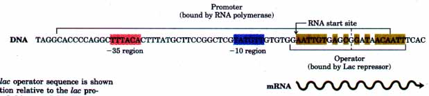
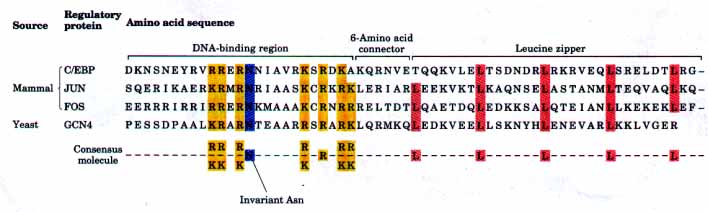
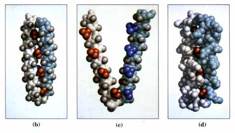

Regulatory proteins generally contain additional domains that are involved in interactions with RNA polymerase, other regulatory proteins, or additional copies of the same regulatory protein (Fig. 27-13). The DNA binding sites for regulatory proteins are generally inverted repeats of a short DNA sequence (a palindrome) at which two or four copies of a regulatory protein bind cooperatively, as in Figures 27-11 and 27-13.
The Lac repressor is a tetramer of identical subunits (Mr 37,000). A wild-type E. coli cell generally contains about ten copies of Lac repressor. The i gene is transcribed from its own promoter independently of the lac operon genes (Fig. 27-7). The repressor binds to a palindromic operator sequence that spans 22 base pairs within the larger regulatory region of the lac operon (Fig. 27-14). The symmetry of the operator sequence matches a twofold axis of symmetry in the arrangement of Lac repressor subunits. The repressor binds to the operator very tightly, with a dissociation constant of about 10-13 M. It discriminates between this site and other sequences by a factor of 4 x 106, a level of discrimination required if the repressor is to locate and bind specifically to these 22 base pairs among the 4.7 million or so base pairs in the E. coli chromosome. DNA binding is mediated by a helix-turn-helix motif within the DNA-binding domain of each repressor subunit.

Figure 27-14 The lac operator sequence is shown to illustrate its position relative to the lac promoter. The bases shaded beige exhibit twofold (palindromic) symmetry about the axis indicated by the dashed line.
Many other regulatory proteins bind to DNA as dimers, including many eukaryotic gene activators called transcription factors. In addition to DNA-binding domains (which often contain zinc fingers), many transcription factors have structural domains devoted to the protein-protein interactions involved in dimer formation (these dimers consist of identical or closely related proteins, as described later). Dimer formation is generally a prerequisite for DNA binding. As is the case for DNA-binding motifs, the protein structural motifs that mediate protein-protein interactions tend to fall into one of several common and recognizable patterns. Two such structural motifs that have been well characterized are the leucine zipper and the basic helix-loop-helix.
The Leucine Zipper This motif is an amphipathic a helix with hydrophobic amino acids concentrated on one side (Fig. 27-15). The hydrophobic surface is the point of contact between the two proteins making up the dimer. A striking feature of these a helices is the frequent appearance of Leu residues; they tend to occur as every seventh amino acid residue, which has the effect of arranging them in a straight line on the hydrophobic side of the a helix (Fig. 27-15). An early model for protein-protein interactions between these helices envisioned the Leu residues interdigitating, hence the name "leucine zipper." It is now known that the Leu residues on the two proteins line up side by side, and that the interacting a helices coil around each other (a coiled coil) as shown in Figure 27-15b. In regulatory proteins with leucine zippers, the DNA-binding domain is often found in an extension of the leucine-zipper a helix, which contains a high concentration of basic (Lys/Arg) residues. Leucine zippers occur in a wide range of eukaryotic regulatory proteins, and a few examples have also been found in prokaryotic proteins.


Figure 27-15 Leucine zippers. (a) Comparison of amino acid sequences (shown here using the single-letter amino acid representations) of several leucine zipper proteins. Note the Leu (L) residues occurring every seventh residue in the dimerization region, and the number of Lys (K) and Arg (R) residues in the DNA-binding domain. (b) A leucine zipper from the yeast activator protein GCN4. Only the "zippered" a helices (white and light blue), derived from different subunits of the dimeric protein, are shown. The interacting Leu residues are shown in red and purple. All other amino acid side chains are represented by gray balls in order to expose the Leu-Leu interactions. (c) In this representation, the zipper shown in (b) has been opened up to show the alignment of Leu residues on each a helix. (d) The leucine zipper of (b) is shown with all of the amino acid side chains displayed.
The Basic Helix-Loop-Helix A second group of eukaryotic regulatory proteins, many of which have been implicated in the control of gene expression that directs the development of multicellular organisms, share a conserved region of about 50 amino acid residues that include the determinants for both DNA binding and protein dimerization. This region can form two short amphipathic a helices linked by a variable length "loop." This helix-loop-helix (distinct from the helix-turn-helix motif associated with DNA binding) in one protein interacts with its counterpart in another to form dimers. DNA binding is again mediated by a short stretch of amino acids, rich in basic residues, that is immediately adjacent to the helix-loop-helix.
Within both classes of eukaryotic transcription factors described above, several families have been defmed that are closely related in a structural sense. Within families, dimers may form between two identical proteins (a homodimer) or between two different members of the family (a heterodimer). A hypothetical family of four different leucine zipper proteins may thus form up to ten different dimeric species. In many cases the different combinations appear to have distinct regulatory and functional properties.
In addition to structural domains devoted to DNA binding and dimerization (or oligomerization), many regulatory proteins must interact with RNA polymerase and/or with other unrelated regulatory proteins. At least three different types of additional domains for protein-protein interaction have been characterized: (1) glutamine-rich, (2) proline-rich, and (3) acidic domains, the names reflecting amino acid residues that are unusually abundant. How these three structures mediate protein-protein interactions is poorly understood. The various structural motifs for DNA binding and protein-protein interactions will be expanded upon with the aid of specific examples later in this chapter.
We now turn to a more detailed description of the regulatory schemes used by several prokaryotic and eukaryotic gene systems. Simple protein-DNA binding interactions are transformed into the intricate regulatory circuits so important to virtually every cellular function.